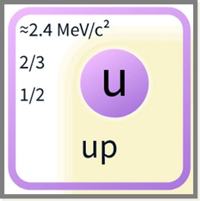
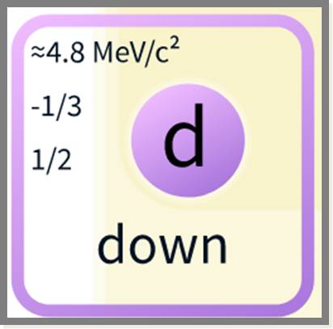
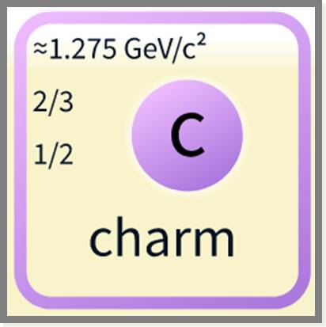
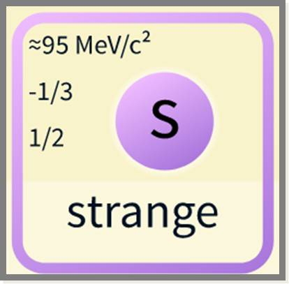
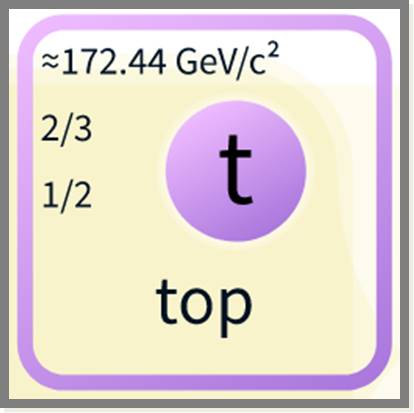
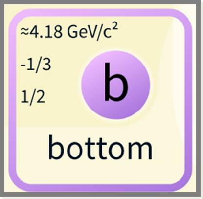

They are going to be here!
Right now!...Anytime now
Quarks are fundamental constituents of matter that combine to form hadrons. The most commonly known hadrons that are formed by quarks are the baryons, protons and nuetrons.
The six "flavours" of quarks are: up, down, charm, strange, top and bottom.
As quarks are fundamental constituents of matter, they do have their counterparts, their anti-particles, the anti-quarks.
Baryons are made up of three valence quarks. This means that inside every baryon there is a sea of quarks present. This means that there can be a strange and an anti-strange quark, a charm quark and an anti-charm quark and so on.
The quarks annihilate when in contact with their anti-quarks, leaving only three valence quarks.
Under the quantum chromodynamics theory quarks have a property called as colour charge.
Though they are called "colours", they are not actual colours. The colour charges of the three valence quarks can either be red, green or blue and will add up to 0 thereby making the baryon "colourless" or white. Similarly, the colour of the anti-particle will be the particle's colour. So, a green charm quark's anti-charm quark will have an anti-green colour.
| Up | Down | Charm | Strange | Top | Bottom |
|---|---|---|---|---|---|
|  |  |  |  |  |  |
Humans
have been
thinking about
Quarks
since 1960s